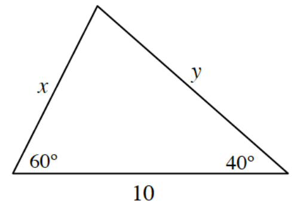

Sketch the graph of \(f(x)=x+3\). What is \(\lim_{x\to 2} f(x)\)?
What is the difference between the following two expressions: \(\lim_{x\to 2} f(x)\) and \(\lim_{h\to 0} f(x+h)\)?
Sketch the graph of a fourth-degree polynomial function that crosses the \(x\)-axis at \((-3,0)\) and \((5,0)\), bounces off the \(x\)-axis at \((2,0)\), and has a \(y\)-intercept of \((0,6)\). Then write the equation of the function.
Solve each of the following equations.
\(15(x-2)^3=50\)
\(3\log_{5}(x-2)=6\)
\(\log_{5}(x)-\log_{5}(x-2)=2\)
Christina is solving the equation \(\tan(x)=\frac{4}{3}\). “That’s interesting,” she says. “Since \(\tan(x)=\frac{\sin(x)}{\cos(x)}\), the exact measure that \(\sin(x)=3\) and \(\cos(x)=7\). But that’s impossible.”
Why is it impossible?
Solve for \(x\) if \(0\le x<2\pi\).
What is going on here?
Your science teacher needs to prepare a solution that is \(60\%\) acid for your upcoming class experiment. The problem is that the company your teacher orders supplies from messed up the last order. They sent \(45\%\) and \(65\%\) acid solutions instead of \(60\%\). Your science teacher must now add some to start with \(350\) mL of the \(45\%\) solution, how much \(65\%\) solution must be added to end up with the proper concentration needed for the experiment?
Calculate the values of \(x\) and \(y\), in the triangle at right. Then calculate the area of the triangle.

Given \(x^3+y^2=1\), simplify each of the following expressions.
\(\frac{1}{x}+y\)
\(\frac{x}{x}+\frac{y}{x}\)
\(\frac{x^{-1}}{y^2}\)
\((1-x)\left(y-\frac{1}{x}\right)\)